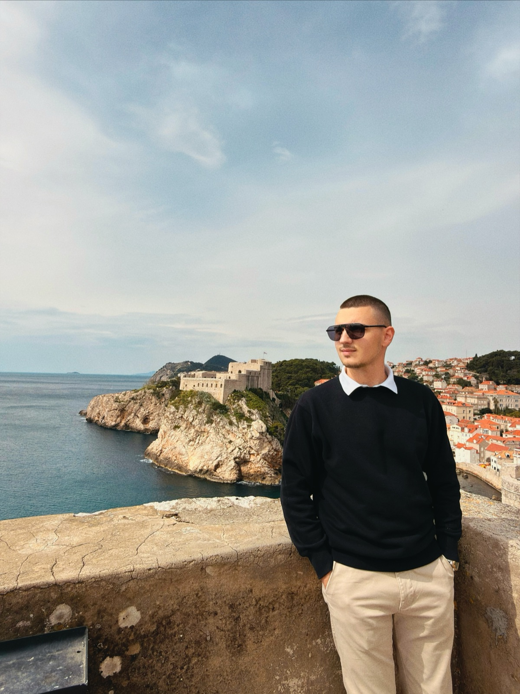
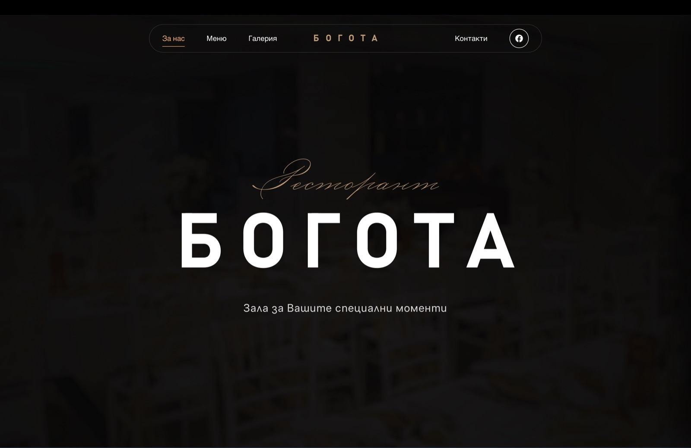
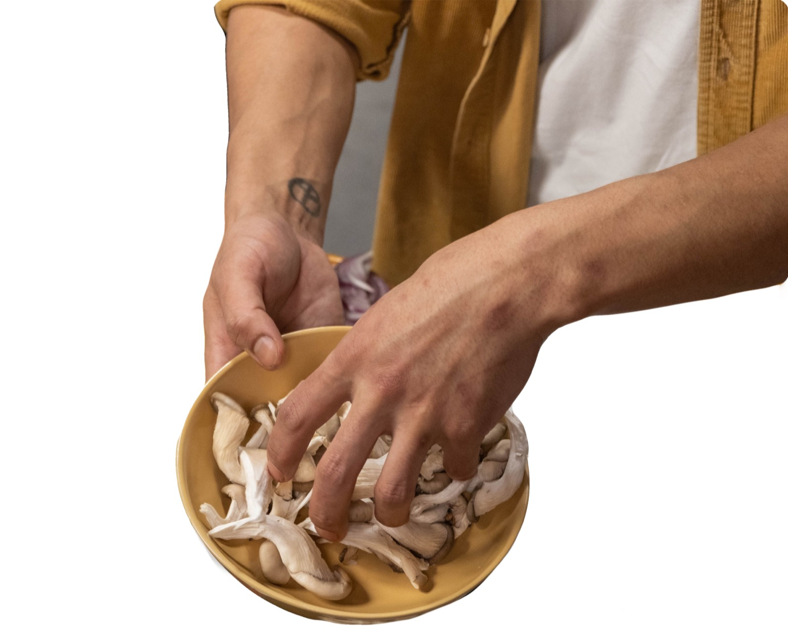
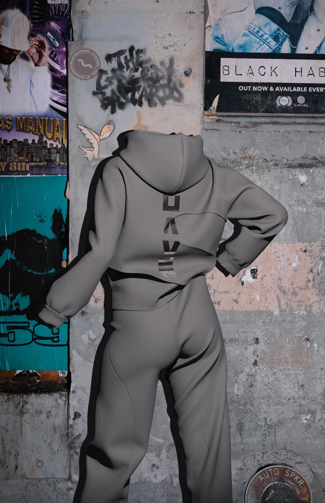
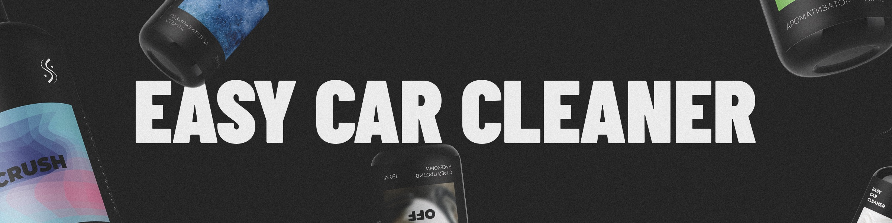
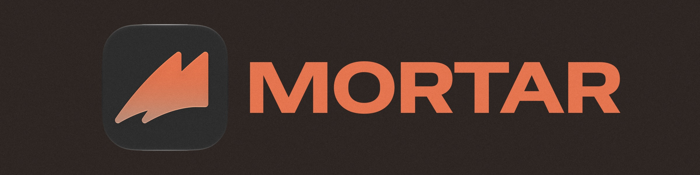

I design :

— A note —
I am a graphic and web designer working remotely since 2017 across brand identity, digital interfaces, product design, packaging, and fashion. The range is wide by design; I follow the work wherever it leads.
I studied Graphic Design at university and left when it became clear I had outpaced the curriculum. The real education happened in the work itself — in real briefs, real clients, and the kind of pressure that sharpens you faster than any classroom. I later formalised parts of that knowledge through SoftUni Creative, one of Bulgaria's most recognised creative programmes.
From restaurant identities to meal-subscription apps, from packaging systems to my own clothing label — I work where visual thinking meets real purpose. Every project is treated as if it will be printed, worn, or lived with for years.
Four projects that show the range. The full archive is available on request — some of it lives in print and deserves to be seen as such.





We are extremely happy with the work on our restaurant's website and menu! Professional execution, modern design and attention to every detail. Communication was quick and easy, and the final result perfectly reflects our concept. Highly recommended!
Thanks to the attention to detail and professionalism, I was able to develop my own brand.
If you've a brand, a site, or a quiet idea that needs shape — write to me. I read every message myself.